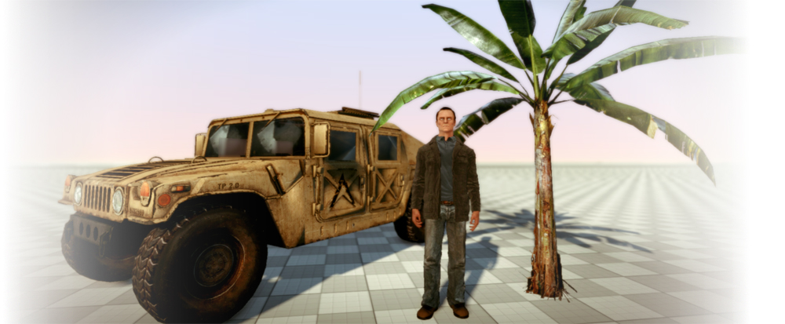
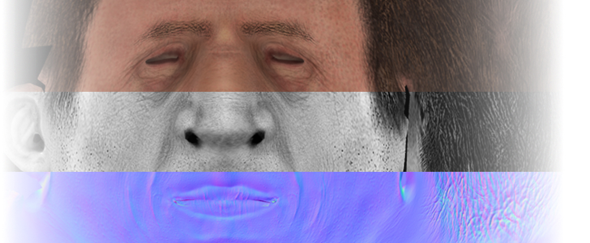
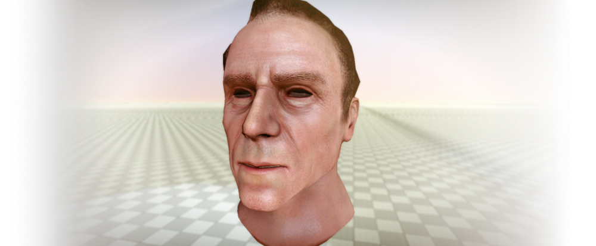
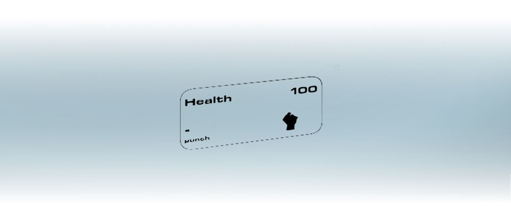

Обзор
Существует несколько типов файлов, которые подходят художникам и аниматорам CRYENGINE в их повседневной работе. На этой странице перечислены различные типы файлов, а также краткое описание их функций и использования.
Геометрические активы

.cgf (формат геометрии Crytek)
Файл .cgf создается в 3D-приложении и содержит данные геометрии (сгруппированные треугольники, атрибуты вершин, такие как касательное пространство или цвет вершин, а также дополнительные физические данные).
.chr (Персонаж)
Файл .chr создается в 3D-приложении и содержит данные скелета и физические прокси, используемые для обнаружения попаданий и моделирования тряпичной куклы, которые управляются анимацией.
.cga (анимация геометрии Crytek)
Файл .cga представляет собой анимированные данные геометрии твердого тела на основе сводной точки. Это означает, что мы не используем геометрию со скинами для этого типа ресурсов и по-прежнему получаем анимацию жестких частей сущности в движке. Это тип ресурса, который следует использовать для транспортных средств, поскольку он позволяет использовать анимацию, например открытие двери, или любую анимацию, в которой не используются изгибы частей, например геометрия со скинами для персонажей. Файл .cga создается в 3D-приложении. Части будут связаны друг с другом в иерархии и будут иметь главную корневую базу. Он поддерживает только напрямую связанные объекты и не поддерживает анимацию на основе скелета (анимацию костей) с взвешенными вершинами. Crytek Geometry Animation (.cga) работает вместе с файлами .anm.
.ма
Собственный формат файла ASCII, используемый Autodesk Maya.
.atom (анимационный файл Maya)
Autodesk Maya .атом Формат файла позволяет сохранять анимацию одного объекта и импортировать ее в другой объект.
.dae (Коллада)
Это промежуточный формат файла, экспортированный из Autodesk Maya.
.zip (содержит данные)
Экспортер Maya сохраняет файл .dae внутри файла .zip.
.fbx (промежуточный формат файла)
В будущем .fbx заменит все другие промежуточные форматы файлов (.dae, .zip, .ma, .anm,...).
.abc (Кэш перегонного куба)
Alembic — это формат файла, в котором хранится информация о вершинах постоянного набора вершин для сложных симуляций или иллюзии анимации геометрии скелетированной сетки.
.cbc (настройки сжатия для кэша Alembic Point)
Это файл настроек, в котором хранятся параметры, используемые для преобразования Alembic (.abc) файл.
.cax (кеш Geom CRYENGINE)
Этот файл представляет собой обработанный файл Alembic, который компилятор ресурсов сжимает в формат, удобный для Engine.
Текстуры и материалы

.tif (формат файла изображения с тегами)
Файл .tif должен быть создан в Photoshop с помощью плагина CryTif. Он содержит изображения в формате TIF плюс дополнительные метаданные (т. е. сжатие), которые используются компилятором ресурсов (RC). RC преобразует формат .tif в целевой формат файла платформы.
.dds (поверхность DirectDraw)
Файлы .dds — это файлы текстур, созданные компилятором ресурсов из исходных файлов Tif и специально оптимизированные для целевой платформы. Это оптимальный формат для видеокарт PC. Он может содержать сжатые и несжатые данные.
.mtl (Материал)
Файл .mtl создается в Material Editor в Sandbox и описании материала (внутренне XML-файл). Он содержит настройки шейдеров, типов поверхностей и ссылки на текстуры. Файл The.mtl — это текстовый файл, содержащий всю информацию внутриигровой библиотеки материалов. Библиотека материалов представляет собой набор дополнительных материалов, которые можно назначить каждой грани геометрии. Например, вы можете использовать разные поверхности, такие как металл, пластик и человеческая кожа, в пределах разных идентификаторов актива. Каждый из этих субматериалов может использовать разные шейдеры и разные текстуры.
Данные материала Sandbox хранятся в файле XML с расширением .mtl.
CRYENGINE будет искать файл .mtl с тем же именем, что и имя материала, присвоенное объекту в вашем инструменте DCC.
Если этот файл не существует, он автоматически просканирует папку объекта на наличие файла .mtl с тем же именем, что и у объекта.
Анимации
.cdf (файл определения символов)
Файл определения персонажа создается в редакторе символов в Sandbox. Он содержит ссылку на файл .chr и его вложения (может быть .chr или .cgf).
.skin (сетка рендеринга со шкурой)
Файл .skin создается в 3D-приложении и содержит данные персонажей со скинами. Это может быть любой актив, анимированный с помощью вершин, взвешенных по костям, таких как люди, инопланетяне, веревки, лампы, головы и парашюты. Файл .skin включает в себя сетку, вес вершин, цвета вершин и цели морфинга.
.anm (анимация)
Файл .anm создается в 3D-приложении и содержит данные анимации для объектов .cga. Каждый файл CGA, содержащий более одной анимации, использует файлы .anm для перемещения отдельных частей объекта CGA. Если для объекта существует только одна анимация, она будет сохранена в файле CGA как анимация по умолчанию в редакторе символов. Файлы .anm используются для группировки различных анимаций твердого тела. Например, можно сгруппировать опускание шасси отдельно от люка в проем кабины.
.chrparams (файл параметров символов)
Для (скелетного) персонажа в игре существуют определенные определения, которые должны быть сделаны в единой файловой структуре XML, называемой файлом .chrparams. Файл .chrparams имеет то же имя, что и символьный файл, на который он ссылается. Пожалуйста, посмотрите Анимационные мероприятия документ для получения дополнительной информации.
.i_caf (файл анимации промежуточного персонажа)
Промежуточный файл анимации персонажа содержит данные анимированной кости для конкретного персонажа. Файлами .i_caf можно обмениваться между персонажами со схожей структурой костей. Промежуточный файл анимации персонажей хранит анимацию в несжатом формате и используется в производстве. Такие файлы создаются с помощью плагинов DCC, см. Экспорт анимации для получения подробной информации.
.animsettings (настройки анимации)
Файл настроек анимации содержит настройки сжатия для каждой анимации. Это дополнительный файл, который хранится рядом с файлом .i_caf и описывает, как его следует скомпилировать компилятором ресурсов. Настройки анимации создаются с помощью инструмента импорта анимации в Sandbox, см. Экспорт анимации.
.caf (файл анимации персонажей)
Сжатое представление формата i_caf. В этом формате используется сжатие с потерями, и такие файлы создаются либо Sandbox, либо во время сборки ресурса. Такие файлы загружаются движком во время выполнения.
.bspace (смешивание пространства)
Пространство смешивания определяет, как несколько анимационных ресурсов смешиваются вместе. Пространства смешивания параметризуются во время выполнения с помощью параметров передвижения, таких как скорость движения, направление движения, угол поворота или наклон. См. Смешать пространства — Character Tool.
.comb (комбинация Blend-Space)
Это позволяет объединить несколько более простых пространств смешивания в одно, обычно более высокого порядка.
.animevents (база данных анимационных событий)
В этом файле хранится список ресурсов с разметкой синхронизированных событий. Он используется, например, для звуков шагов. Базу данных событий можно создать и изменить в редакторе символов, и она отображается в файле .chrparams.
SkeletonList.xml (таблица псевдонимов скелета)
Таблица, которая сопоставляет псевдонимы скелетов, используемые в .animsettings, с именами файлов скелетов. Информация о структуре скелета необходима во время сжатия анимации.
Начиная с версии движка 5.6, список скелетов больше не используется.
DBATable.xml (таблица DBA)
Содержит список файлов .dba (базы данных анимации). Для каждой базы данных анимации существует список файлов .caf, которые включаются.
Предварительные настройки сжатия
.dba (база данных анимации)
Такие файлы создаются компилятором ресурсов согласно DbaTable.xml. Они хранят несколько файлов анимации и устраняют избыточность, обеспечивая дополнительное сжатие без потерь. Отдельные файлы .caf больше не нужны, если они не являются ресурсами по требованию. Файл базы данных должен быть установлен в файле .chrparams.
.phys (файл редактора ткани)
.adb (база данных Mannequin)
Содержит базу данных анимации Mannequin. Файл .adb представляет собой контейнер, определяющий реализацию каждого фрагмента, т. е. какая анимация на каком фрагменте воспроизводится.
Редактор лица

Пожалуйста, посмотрите Файлы ресурсов лицевой анимации для получения дополнительной информации.
.fxl (библиотека выражений редактора лиц)
Файлы библиотеки выражений лица содержат информацию о том, как выражения и фонемы для персонажа создаются с помощью целевых морфов, специфичных для персонажа.
.fsq (последовательность редактора лиц)
Файлы лицевых последовательностей содержат данные анимации ключевых кадров для определенной последовательности лицевой анимации.
.fpj (проект редактора лиц)
Файл проекта редактора лиц настраивает редактор лиц для конкретного персонажа и содержит информацию о файлах .fxl и .cdf. Используйте его для быстрой настройки редактора анимации лица.
.joy (джойстик редактора лиц)
Файлы джойстика содержат информацию о настройке управления джойстиком для редактора лиц.
.grp (файл группы)
Файлы GRP — это экспортированные объекты последовательности, которые появляются на уровне при создании новой последовательности Trackview. Сохранение этих объектов в виде файлов .grp экспортирует в формат XML все, что содержится в эпизоде, от позиций звука до скелетной анимации и траекторий камеры. Затем это можно импортировать в последовательность лиц для использования в редакторе лиц.
Аудио ресурсы
.wav (Волна)
Волновые файлы содержат исходные звуковые данные. Обычно процесс сборки отфильтровывает файлы .wav, поскольку их не следует использовать во время выполнения.
.fdp (проект FMOD)
Файл .fdp представляет собой файл проекта на основе XML для инструмента дизайнера FMOD. Он поставляется опционально, но необходим для SoundBrowser в Sandbox.
.fev (проект выполнения FMOD)
Файл .fev — это двоичный файл, который необходим для загрузки данных события FMOD во время выполнения. Он содержит все необходимые метаданные для звуковых событий.
.fsb (FMOD SoundBank)
Файлы SoundBank содержат звуковые данные в определенном формате. Для Xbox360 они обычно кодируются в формате XMA. На PS3 используется формат .mpeg. Файлы FSB используются для звуковых событий, а также для музыки на консолях и в будущем будут использоваться и для голосовых файлов.
.ogg (OGG-VORBIS)
Файлы OGG содержат звуковые данные, закодированные в OGG-Vorbis. В настоящее время они используются только на PC для музыки и со временем будут заменены конкретными файлами FSB.
.mp2 (в кодировке MPEG)
Голосовые файлы в настоящее время кодируются с помощью бесплатного кодировщика lame-mp2 на всех платформах. Со временем они будут заменены конкретными файлами FSB.
.cache/.seq/.fdt./.lst/.log/.h (разные файлы: FMOD)
В процессе сборки FMOD создается несколько других файлов. Все эти файлы не имеют решающего значения для Sandbox или игры, их можно игнорировать и фильтровать. Однако они по-прежнему полезны для процесса создания звука.
Флеш-активы

Пожалуйста, посмотрите Прошить систему UI для получения дополнительной информации.
.fla (авторский файл Flash-фильма)
Это редактируемые фильмы или анимации, созданные с помощью Adobe Flash; они часто сохраняются в виде файла .SWF для использования в Интернете. Файл FLA — это редактируемый файл проекта, сохраненный программой разработки Flash. Файл SWF представляет собой сжатый формат, который можно просмотреть в большинстве веб-браузеров с помощью плагина Flash. Первоначально Flash был разработан компанией Macromedia, которая объединилась с Adobe в 2005 году.
.swf (файл формата Flash)
Анимация, созданная Adobe Flash (ранее Macromedia Flash). Файл .swf может содержать текст, а также векторную и растровую графику. Воспроизводится в веб-браузерах, в которых установлен плагин Flash. Большинство веб-браузеров поставляются с последней версией плагина Flash.
.gfx (сжатый Flash-файл, преобразованный в масштабную форму)
Scaleform GFx — это легкий, быстрый механизм рендеринга анимации изображений и векторной графики, который разработан с учетом всех преимуществ современного оборудования для 3D-графики, но при этом совместим с широким спектром систем. В дополнение к основному механизму рендеринга Scaleform GFx содержит реализацию Flash-плеера «чистой комнаты», позволяющую разработчикам игр создавать пользовательские интерфейсы с помощью отмеченной наградами Adobe Flash Studio.